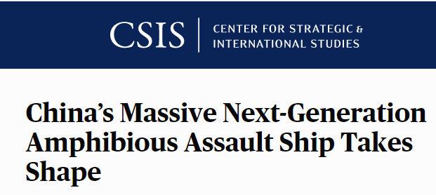
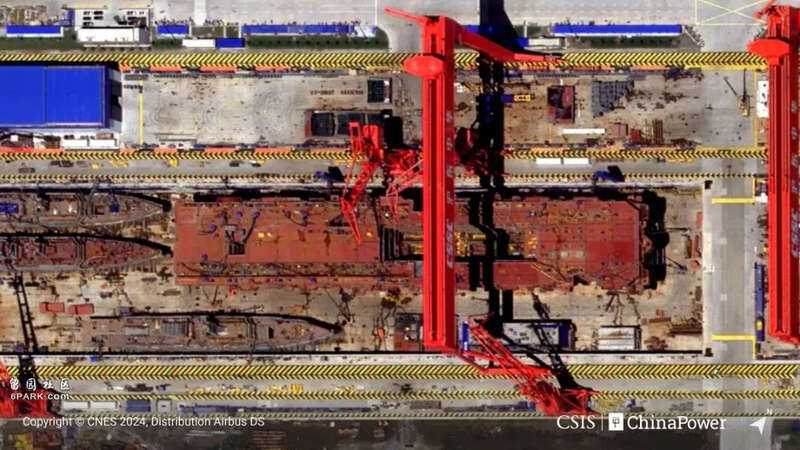
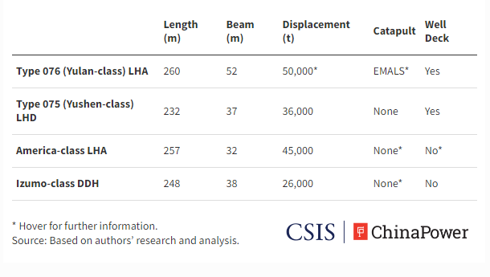
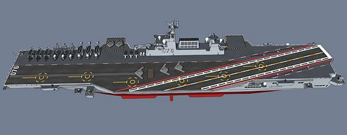
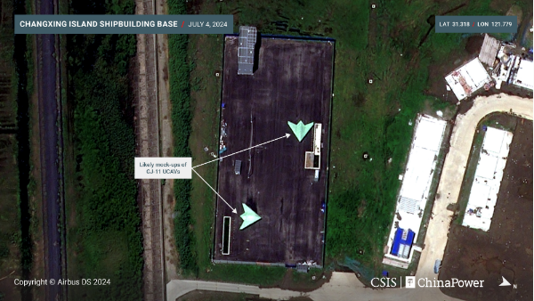

美国智库战略与国际研究中心8月1日发布了一份详细报告，宣称中国正在建造的076型大型两栖攻击舰最快将在明年上半年下水。最让美国智库吃惊的是，它的吨位不但大幅超过了美国的“美国”级两栖攻击舰和日本的“出云”级直升机母舰，而且还配备了独一无二的设备——用于弹射固定翼飞机的电磁弹射装置。


笔者首先要强调的是，美方报告并没有得到中国官方的认可，充斥着很多猜测和脑补，因此它并不能代表中国海军的真正能力。但从该报告的行文中也能看出来，美国智库在对比中美两国海军造舰能力时的那种无能狂怒……
该报告称，中国的国防工业基地继续以惊人的速度生产更大、更强的军舰。长兴岛造船基地的新卫星图像显示，第一艘076型两栖攻击舰（即所谓的“玉兰”级）建造进展迅速，它代表了解放军向远离中国海岸投射力量的能力迈出了实质性的一步。

报道称，2024年7月4日的卫星图像显示，正在建造的076型两栖攻击舰飞行甲板宽约260米，宽52米，面积超过13500平方米，几乎相当于三个美国足球场的面积。这比美国“美国”级两栖攻击舰和日本“出云”级直升机航母大得多，也将比中国海军现役的075型两栖攻击舰大得多。一旦完工，076型将成为世界上最大的两栖攻击舰。
像其他两栖攻击舰一样，076型将能够携带数十架飞机和无人机、登陆艇以及超过1000名海军陆战队员。然而，该舰更大的尺寸使其内部机库有更大的容量容纳更多的飞机，并为广阔的飞行甲板上的飞机起飞提供了额外的空间。
值得注意的是，尺寸大只是076型的优势之一。该船进行了重大的技术升级，使其在同类舰艇中处于领先地位。最值得注意的是，它拥有一部用于发射固定翼飞机的弹射器，在所有两栖攻击舰中独树一帜。此前只有标准航母还会配备弹射器，而两栖攻击舰最多只能起飞“鹞”或F-35B这类垂直/短距起降飞机。而中国还没有装备具有这种能力的有人驾驶飞机——不过无人的垂直起降飞机，已经在中国航母山东舰进行过测试了。

更让美国智库焦虑的是，076型可能配备的弹射器是类似于美国“福特”级航母的电磁弹射系统——目前只有美国和中国成功部署的这种先进装备。相比传统的蒸汽弹射器，它能提供更大的动力，允许更大的飞机携带更重的有效载荷。
该报告称，中国正在海试的第三艘航母福建舰配备三部电磁弹射器，如果在076型两栖攻击舰上也安装一个同样的弹射器，表明中国对其设计非常有信心。卫星照片显示，076型上的弹射器预留轨道长约130米，明显长于在福建舰（长约108米），可能具备起飞更大型飞机的可能。但该报告也承认，需要更多的时间才能确定076型两栖攻击舰上的弹射器确切长度和能力。
此外，卫星图像也显示076型将在船舷两侧各安装一部飞机升降机用于将飞机从内部机库提升到飞行甲板。与075型的设计相比，这种新配置更好地优化了飞机起飞和降落——075型设计有一个较大的尾部升降机和一个较小的内部前部升降机，后者使用时会阻碍飞行甲板的运作。
该报告称，以上特征为076型两栖攻击舰起飞固定翼飞机“打开了大门”——固定翼飞机通常比直升机具有更大的航程、速度和有效载荷能力。“至少该舰能发射固定翼无人攻击机，它比有人驾驶飞机更轻，更容易弹射和降落”。但报告大胆猜测称，076型两栖攻击舰的超长弹射器、更宽的飞行甲板和优化的升降机设计，表明它更可能用于起降有人驾驶飞机。这将使076型成为全球两栖攻击舰的新标杆，它的能力介于传统的航母和两栖攻击舰之间。

即使076型两栖攻击舰仅搭载无人机，它配备的空中力量也将具有很强的能力。报告称，中国拥有先进且不断增长的无人机武器库，包括攻击-11隐形战斗无人机，无侦-7侦察无人机和彩虹系列武装无人机等。分析人士认为，早先已经有卫星照片发现中国无人机在进行弹射试验，表明解放军正在试验使其适应舰载作战的方法。
此外，除了携带强大的空中力量外，它依然具备传统的两栖攻击能力。该舰预计在尾部设有两栖车辆进出的甲板，允许气垫登陆艇进行“舰对岸”操作。因此076型投入使用后，将成为多功能作战平台，能进行空中作战、两栖登陆并提供联合指挥和控制。
更让美国智库羡慕嫉妒恨的是，076型两栖攻击舰建造过程中所展示的中国强大的造船能力。报告称，“即使对于中国多产的造船厂，该舰的进展速度也非同寻常。从中国福建舰航母及075型两栖攻击舰的建造时间表推断，076型可能在2025年上半年下水”。报告还宣称，在076型旁边的干船坞中可以看到三艘054A型导弹护卫舰同时在建造中，展示了该造船厂“无与伦比的造船能力”。报告最后承认，即便076型两栖攻击舰不会从根本上改变印太地区的军事平衡，但它将给解放军带来更多的作战力量选择，“无论是在西太平洋、南中国海还是更远的地方”。